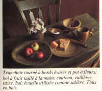
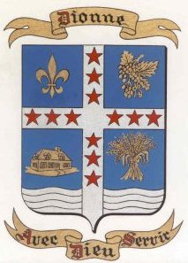
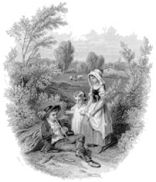
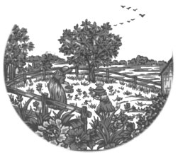
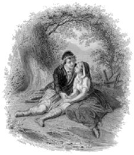
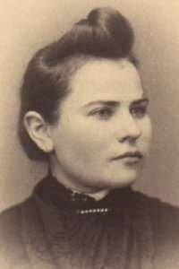
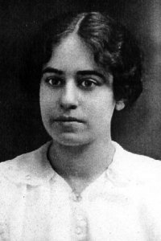

|

TWO BROTHERS IN
NEW FRANCE
|
They bear the family
name Guyonne and the nickname Sansoucy. Did they cross the Atlantic together,
and under what kind of contract? There is no telling. We do not even know the
names of their parents or which French province they came from. Guyonne
very soon turned into Dionne. |
Jean
On July 14, 1662, Jean is granted land 2 arpents wide by
63 deep in the rear fief of Charny-Lirec, on the Île d'Orléans. Jean's
neighbours are Pierre Chalut and Maurice Crépeau. On June 5, 1663, in
Beauport, Jean agrees to be godfather to Anne Chalut, his neighbour's daughter. On that occasion Anne Fossé, wife of
François La Raue,
stands with him as godmother. Then, in Quebec City on August 3, 1665, Jean is
recorded as godfather to his niece Anne Dionne.
On November 7, 1674, Jean Dionne-dit-Sansoucy,
a habitant (farmer) of Beauport, sells the land he acquired in 1662 to Jean LeSueur. After that we lose track of him. |
|

|
| Antoine
(1641-1721) – the ancestor of all the Dionne
families
Since neither the marriage record nor the baptism record of the first child
(born in 1661) of Antoine Dionne
and his wife Catherine Yvory has been found in Canada, the couple seems to have been
married already when they came over. Their
son André, aged three, is buried at Château-Richer at the end of
November 1664, when the parents are already living on the Île
d'Orléans.
Like his fellow settlers,
Antoine
often changes plots of land. All his life he seems busy buying, selling,
swapping and moving. At first he lives for several years
on his brother's farm,
even though he has his own land,
2 arpents wide, from March 2, 1665, a farm bought from Jean
Mourier, next to those of René Cosset and Laurent Benoist.
In 1666 he is listed in the census as living between Michel Chartier, a net maker,
and René Valet. The following year, Antoine Guyonne, 26, and Catherine Ivory, 22,
own one head of cattle and 8 arpents under cultivation. His neighbours: Thomas
LeSueur and Pierre Chalut. So he is farming his brother Jean's land.
In
1669 he swaps his own 1665 land with Jean Vallée for
another, 3 arpents wide, bounded by Jean Guy and Joachim Martin, within
the limits of the future parish of Saint-Pierre. He has 6 arpents under cultivation.
That is where the family sets up house, staying at least 6 years.
This land, 3 arpents wide, at Longue-Pointe, with house,
barn and stable, he sells to Jean Leclerc dit le Bouteleau in 1675.
|
|
|
|
|

Château-Richer, the oldest
village in Quebec, in 1787, by the watercolourist Thomas Davies. The houses are built on the French model, but the harshness of
winter forced the Canadiens to innovate or adopt other
models to make their homes comfortable. It would take
two centuries. "Only at the end of the century of the Conquest
would Canadian experience and the great number of improvements
made to the original models greatly change the
initial character of the French dwelling and produce a model able to
face the rigours of winter while keeping time with the
climate: this is the Quebec house, born of French
ideas and the adaptation of these types of dwelling, but also following
certain English and American influences." (Encyclopédie de
la maison québécoise) |
A game of
musical chairs...
They are often criticized
for changing land as easily as they change shirts.
The
annual censuses and notarial contracts are the only way to
follow our ancestors, who often swapped land among themselves. They
took possession
of their new land in the autumn, as was the custom of the time. The reason is that farmhouses were generally very
small in the early days of the colony, because they were hard to heat. And since families were large, it was often better to buy or swap land than to rebuild
a house that had become too cramped.
|
|

|
Moving hardly mattered,
since the furniture amounted to almost nothing. In the early days it was
above all a question of survival, not of comfort or
decoration. Furniture and utensils were made of wood and met only
the most basic needs. When the whole family is busy
clearing new land, comfort is not the priority. |
|
|
|
THE CRADLE OF THE DIONNES OF AMERICA
At last
Antoine Dionne settles down
 On October 18, 1675, he buys the land of Joseph-Ozanni
Nadeau-dit-Lavigne at Ste-Famille, Île d'Orléans, 3 arpents wide, next
to those of Jean Moreau and Philippe Pâquet. In 1681, at the census,
the Dionne family is still there,
with 3 head of cattle, 25 arpents under cultivation and one gun. His son-in-law Bernard
Laisné, the husband of his daughter Anne, lives under the same roof. Even more
surprising, the land had been leased to his son-in-law for a year.
Antoine is 45. The map drawn by the engineer Villeneuve in 1689
shows this same land of Antoine Dionne
at Ste-Famille, between those of Nicolas Paquin and Michel Montambault dit Léveillé.
This is the cradle of the Dionnes
of America. In 1702 Antoine owns a squared-log house 30
feet long with a chimney, a shed, a stable and 30 arpents of
ploughed land. In 1709 the cartographer Gédéon Catalogne lists the owner
of this land as Antoine Dionne.
|
|
|
Antoine expands
The
bounds of the Île d'Orléans are not enough for our ancestor. He
acquires
a lot with 20 feet of frontage on the river in Quebec City's Lower Town
in 1678, where he builds a house early in 1679. Henri Brau, a habitant of the
côte de Lauzon, strikes a deal with Antoine Dionne in 1679: Brau gives him a farm at Lauzon 4 arpents wide by 40
deep, with fishing rights, in exchange for the lot Dionne
owns in Quebec City. Antoine works his fishery, since he makes an eel
deal with Lucien Boutteville, a Quebec City merchant, from whom Antoine
borrows money in 1680.
Antoine has a talent for farming, for carpentry and even for eel
fishing.
|
|

|
|
ANTOINE'S CHILDREN
Antoine Dionne and Catherine Ivory have 12 children, six of whom,
five daughters and one son, reach
adulthood:
:
 André
born in France in 1661, and buried at Château-Richer on November 28, 1664.
André
born in France in 1661, and buried at Château-Richer on November 28, 1664.
Anne
born at St-Pierre, Île d'Orléans, on July 27, 1665.
There is no church on the island yet, so she is baptized
in Quebec City on August 3 following. Godfather: Jean Dionne-dit-Sansoucy
(probably her uncle). She marries at the age of 14, on April 25, 1679,
Bernard Laisné-dit-Laliberté (1656-1715), habitant of St-
Laurent, son of the late Guillaume Laisné and of Luce Léonard, living
in the town of Chasteau Vaudrain, in Brittany.
Marie
Madeleine born
at St-Pierre on December 4, 1667, and baptized on the 22nd of the same
month at Ste-Famille. She
seems to have left her father's house before 1681, at 13, since she is not mentioned
with the family in the census that spring. She
marries in Quebec City, on November 20, 1691, Charles (Le) Normand (1663-1715), of
Quebec City, son of Jean LeNormand and Anne LeLaboureur, also of Quebec City. Five children,
two of them sons, are born of this marriage
in Quebec City. She dies
in Quebec City at the age of 35 and is buried there on December 10, 1702.
Antoine
born at St-Pierre on February 20,
1669, and baptized on the 23rd at Ste-Famille. Died before 1681.
Jean
born at St-Pierre on March 8, 1670, and baptized on the 11th at Ste-Famille. The 1681 census lists him under the name Jeanne and
gives his age as 12. He marries
Marie-Charlotte Mignot in 1694 and is the only one to carry on the family name.
Marie-Josepthe
born at St-Pierre on March 6, 1672, and baptized on the 7th at
Ste-Famille. The
1681 census gives her age as 10. She marries at Ste-Famille, on November 9, 1694,
Pierre-Abel Benoît (1671-1735), then of that parish, son of Abel
Benoit and Marthe Pointel, also of Ste-Famille. Their first five children,
five daughters, are born at
Ste-Famille; then they settle at Deschambault between 1704 and 1706. That is where Marie-Josephte Guyonne dies, aged 64; she is
buried there on February 10, 1736. Her
husband had gone to the grave a year before her and was buried in the same
place on January 2, 1735. They had a large family, but only one
son, Jean-François Benoit
(1715-98), would carry on the line at Deschambault.
Marie born at St-Pierre on April 22, 1674, and baptized on May
7 at Ste-Famille. The 1681 census lists her under the name Anne
and gives her age as 8. We lose
track of her after that date.
Anne
born on September 13, 1676, at Ste-Famille and baptized in
the same parish on the 27th. The 1681 census lists her under the name Marie and
gives her age as 5. She marries, at
Ste-Famille, on August 19, 1697, Barthélemy Gobeil (1668-1724), of St-Jean,
Île d'Orléans, son of Jean Gobeil and Jeanne Guiet, also of that parish.
Marguerite
born on September 5, 1678, and baptized the next day at Ste-Famille. Buried in the same
place on the 18th of the same month.
Catherine born on the 29th and baptized on the 31st of
March 1680 at Ste-Famille. Buried
in the same place on April 10 of the same year.
Catherine born on April 23, 1681, baptized at
Ste-Famille the next day, and buried in the same
place on February 7, 1683.
Catherine born in 1685, according to her marriage
contract of May 28, 1702, which gives her age as 17. The Tanguay Dictionary
says she was baptized at Ste-Famille on August 11, 1683, but this record cannot
be found in either copy of the Sainte-Famille register. She marries, in that same parish, on May 30, 1702, Joseph Michaud,
born on the île aux Grues on December 1, 1678, son of Pierre Michaud and
Marie Ancelin, then settled at Grand-Kamouraska. The couple die after 1709.
Source:
the Dionne family website.
|
|
|
|
An old-age pension by court order
Social
security would only come in the 20th century; sometimes
it took the courts to make sure the elderly were provided for.
An order of the Intendant,
who was responsible for running the colony, dated August 3, 1721,
orders Pierre-Abel Benoit, Antoine's son-in-law, a habitant of Deschambault, to take Antoine
Dionne, habitant
of St-Jean, Île d'Orléans, into his house, and to
lodge, feed and keep him for the rest of his life. Barthélemy Gobeil, of
St-Jean, another son-in-law of the said Dionne,
must pay half the costs. According to the censuses, Antoine Dionne
is then about 80 years old. He probably dies at the home of his
son-in-law Barthélemy Gobeil, in Saint-Jean, where he is buried on December 25,
1721. Catherine Ivory, his wife,
had died after 1705. |
|

|
|
SECOND
GENERATION
JEAN
DIONNE-DIT-SANSOUCY
(1670-1752)
|
|
Childhood on the Île d'Orléans
In the spring of 1670, on March 8, Jean
Dionne-dit-Sansoucy is born,
the only one to carry on the family in Canada. He is baptized on the 11th of the same
month at Ste-Famille. He is born on the land his father had
bought the previous autumn,
at Longue Pointe, that is, in the lower part of the future parish of St-Pierre, about 14 arpents from the boundary with the
parish of Ste-Famille.
Like
father, like son.
Jean
follows his father's example from his youth. Before 1685, while still a minor (15), he obtains a land grant in the parish of
St-Jean. He sells it five years later, in 1689, to Vincent Chrétien. In 1687 Jean buys Pierre Boucher's farm at
Ste-Famille. In 1701 Jean
sells his property to Nicolas Asselin. It is at this time that he leaves the Île
d'Orléans for the Bas du Fleuve. From 1700 his name appears
within the bounds of Rivière-Ouelle, on the east side, today Kamouraska.
|
|
|
|
THE
CHILDREN OF JEAN DIONNE
At
24, Jean Dionne
marries at Château-Richer, on August 2, 1694, Marie-Charlotte Mignot, daughter of the late Jean Mignot-dit-Châtillon (1628-80) and
of Louyse Cloutier (1631-99). Jean Dionne's wife
is said to have been baptized at Beauport on February 2, 1671,
but the 1681 census lists her at La Bouteillerie (Rivière-Ouelle)
under the name Charlotte, aged 11. …
First settled at Beauport, the Mignot-Châtillon family had left
for Grande-Anse soon after 1674, then finally tried to settle at
Rivière-Ouelle.
The first four children of Jean
Dionne
and Marie-Charlotte Mignot are born on their father's land at
Ste-Famille and baptized in that parish. They are:
Louis, born and baptized on August 15, 1695, and buried at
Ste-Famille on the 29th of the same month.
Jean-Baptiste,
born on August 18, 1696, baptized the next day and buried at Sainte-Famille on
September 5 following.
Marie,
born on the 7th and baptized on the 8th of September 1697, who marries first,
before 1718, François Michaud (1687-1727) (1), and then, at
Sainte-Anne-de-la-Pocatière on July 4, 1729, Philippe Boucher (1704-47). She dies
after 1739.
Jean-Baptiste
born and baptized on March 5, 1700, who marries, in 1727 or perhaps a little
earlier, probably at Kamouraska, Marie-Madeleine Michaud.
|
On March 26, 1701, Jean Dionne sells
his land at Ste-Famille.
That same year
the Dionne family
leaves the Île d'Orléans and settles in the
parish of Notre-Dame-de-Liesse de la Rivière-Ouelle.
That is where the
last five children are born. |

|
Augustin,
baptized at Rivière-Ouelle on September 26, 1702. He is our
third-generation Dionne ancestor.
Joseph (1703-79), future notaire (notary)
Geneviève
(1704-70)
Antoine, baptized at Rivière-Ouelle on January 16, 1707, future bailiff
and surveyor
Marie-Anne, baptized at Rivière-Ouelle on July 21, 1709, who marries
first, in 1726, Jean Moreau (1696-1762), son of Jean Moreau and
Marie Rodrigue, of Rimouski; and second, at
Sainte-Anne-de-la-Pocatière on June 6, 1763, Pierre-Joseph Morin.
The last three sons settle at
Sainte-Anne-de-la-Pocatière, the parish where their father Jean
Dionne and his family had moved between 1723 and 1729. Jean Dionne
was the brother-in-law of Noël Pelletier (1654-1712), Nicolas Lebel (1633-78)
and Jean Grondin (1646-1714), three of the first settlers of La Pocatière. Jean dies in 1752.
|
|
|
| THIRD
GENERATION: AUGUSTIN DIONNE |
|
Augustin and his four
wives
The ties with the Île d'Orléans continue,
since Augustin, born at Rivière-Ouelle in 1702, marries Marie
Paradis, a girl from St-Pierre, Île d'Orléans, in 1726.
She dies in 1728 at Kamouraska, having given birth
in that same parish the year before to a son, Augustin.
 On
March 1, 1729, Augustin Dionne
marries a second time, at Kamouraska, Marie-Angélique Moreau (the
sister-in-law of his sister Marie-Anne), widow of Jean Guy.
The notaire Etienne Janneau draws up the inventory of her first
marriage's community of property on April 9, 1731, at the same
time as that of Augustin Dionne's community
with the late Marie Paradis. Immediately
after their marriage, Augustin Dionne
and Angélique Moreau settle at La Pocatière, since their first child is baptized in that parish in 1730.
On April 10, 1731, Jean Dionne,
habitant of Grande-Anse, and his wife make a gift to their son Augustin, also of
Grande-Anse, and to his wife Marie-Angélique Moreau,
of land 2 arpents wide on the river. It is
on this land that Augustin Dionne
raises his whole family.
Augustin Dionne,
widower of Marie-Angélique Moreau, habitant of Sainte-Anne, signs a marriage
contract on April 26, 1756, with Geneviève Autin, widow of Jean Miville.
Then Augustin Dionne,
widowed once again, enters a fourth marriage, at Rivière-Ouelle, on January
1, 1771, with Marie-Madeleine Marinier, widow of Jean-Baptiste
Beaudet.
Source:
my own condensed version of a text by
LEON ROY Lévis
1949
|
|
DIONNE |
Antoine
Dionne
(1641-1721) |
married
around 1660 in France
|
Catherine
Ivory
|
Jean
Dionne
(1670-1752) |
August 2, 1694 |
Charlotte
Mignot
(1671-
) |
Augustin
Dionne
(1702-1771) |
March 1, 1729 |
Marie-Angélique
Moreau
|
Joseph-Marie
Dionne
(1742- ) |
January 18, 1773 |
Angélique
Paradis
|
| Alexandre
Dionne |
October 24, 1809 |
Félicité
Pelletier
|
Ombéline Dionne
( -1874) |
July 24, 1849 |
François Gagnon
(1826-1896) |
| Alphonsine Gagnon

(1869-1929)
|
October 12, 1891 |
Arthur Caron

(1868-1905)
|
| Rosario
Charette
(1897-1940)
|
January 16, 1917 |
Marie-Anna
Caron

(1897-1966)
|
| Gérard
Charette

born: October 19, 1921
died: June 25, 1996
|
June 29, 1946 |
Jacqueline
Consigny

born: August 7, 1926
died: May 3, 1986
|

|